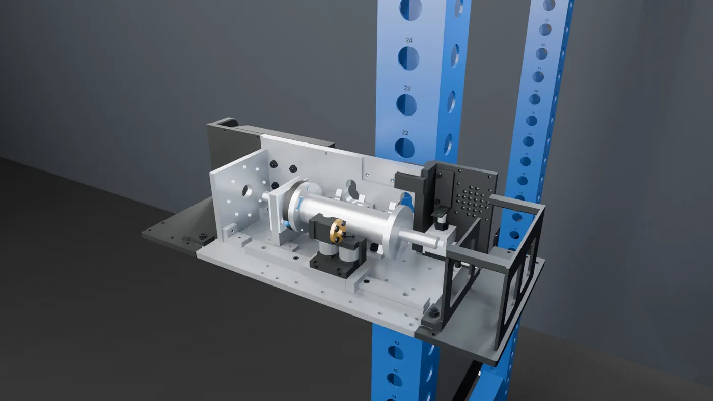
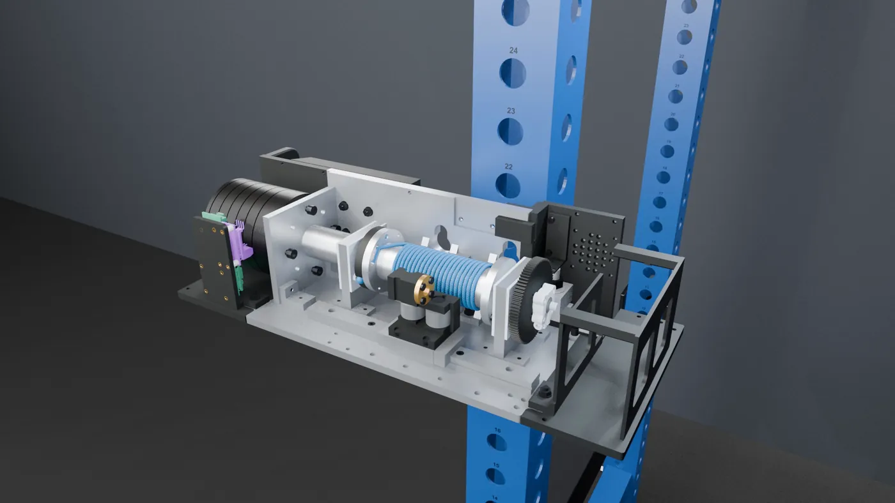
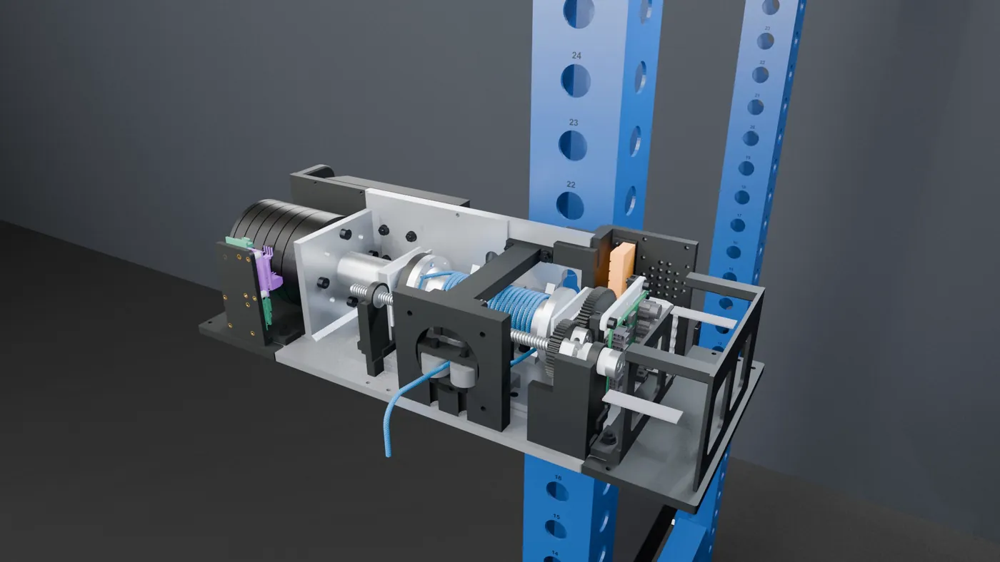
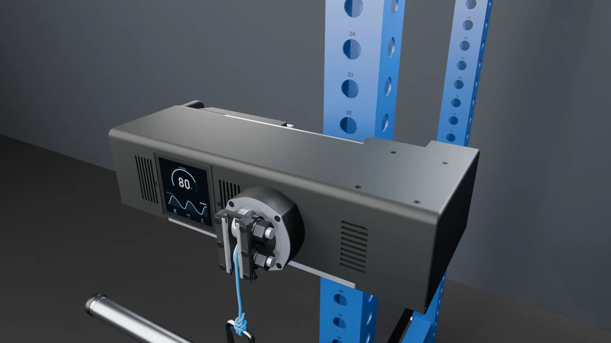
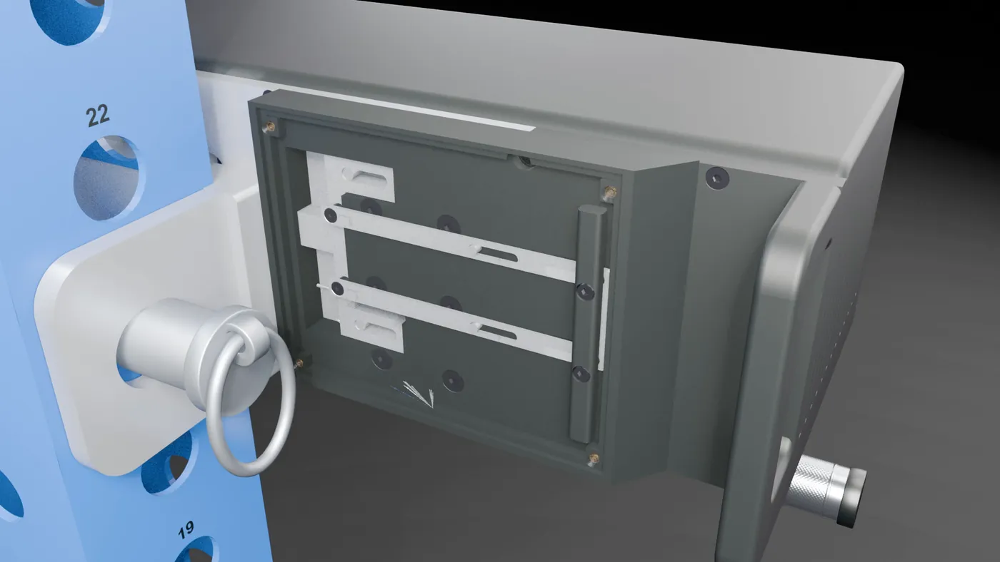

Draft reference · October 2026
The build, illustrated
Stills from the build animation of the current design: the bolted aluminum frame, the drum and level-wind, the motor, the electronics, the covers and the rack mount. They show the layout and the build order; they are not a confirmed fabrication or assembly procedure. The written build order has the steps. Both are drafts until the prototype has been built and load-tested.
1. The bolted frame

The base, rear and motor face plates are 6061 aluminum and screw together into one frame that carries every load, with three machined corner brackets at the rear joint. The printed motor-end and battery-end pieces bolt to it, with the main fuse block.
2. The drum and the level-wind

The level-wind rail and traveller go on the base plate first. The drum is built on the bench (hub, rope laced and clamped, shaft, gear, coupling) and lowered in on its two machined bearing holders. The drum's gear drives the lead screw, which moves the traveller so the rope lays evenly.
3. The motor

The motor bolts to the face plate and drives the drum directly through one clamp coupling: no belt and no gearbox.
4. Electronics, battery and wiring

The ODrive sits on its bracket, the control boards on the front plate, and the two battery packs slide into their cradle. The harness goes in last, fuses first. See the wiring reference.
5. Covers, screen and exit

The screen, Raspberry Pi, BMS and fan hang from the covers, which lower over the frame. The swivelling exit and the rope go on last. The screen content in the animation is an interface concept.
6. On the rack

The rack side bolts round a 3 in rack upright. The unit hangs on it and a spring latch locks it in place; pull the ring to lift it off.
What comes next
The CAD, build files and software are released together after the prototype is tested. Follow the roadmap, or join the build list and kit waitlist at kinetiqgym.com.
Animation imagery from the Kinetiq Gym project, shared with the documentation under CC BY-SA 4.0. Third-party components are shown for their role in the design; this does not imply endorsement.
A draft reference: the prototype is being built and tested, and the CAD, build files and software are released after testing.
Download Markdown source ↗